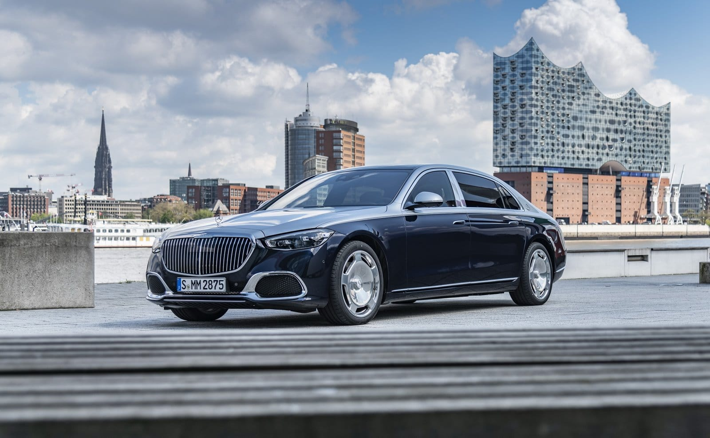
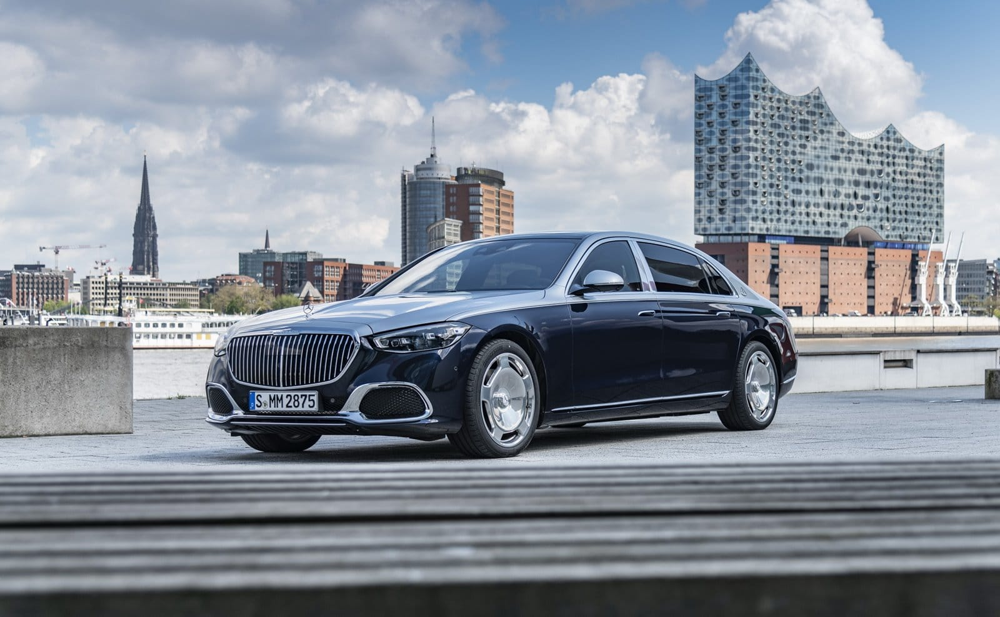

Descripción
Mercedes-Benz DRIVE PILOT es un avanzado sistema de asistencia a la conducción que ofrece una experiencia de conducción más segura y cómoda. Este sistema utiliza tecnología de vanguardia para ayudarte en la carretera y reducir el estrés del conductor. La función del sistema DRIVE PILOT permite la conducción automatizada en autopistas de como mínimo dos carriles independientes hasta una velocidad de60 km/h. Tenga en cuenta que DRIVE PILOT no está autorizado en todos los países. El DRIVE PILOT no está disponible en todas las vías. En cuanto el conductor gira el volante, acelera o frena, la responsabilidad sobre la conducción, el uso seguro del vehículo y el cumplimiento de las normas de circulación vuelve a recaer en el conductor. El siguiente vínculo conduce a la web oficial para más detalles:Drive Pilot 2

13.191 kilómetros disponibles en las autopistas alemanas.
Ya se están realizado amplios viajes de prueba en países como Estados Unidos y China. En cuanto en otros países se dé el marco jurídico nacional para el funcionamiento altamente automatizado, que permita explícitamente apartarse de la conducción, se alcanzará paso a paso la implantación internacional.

Sistema de sensores y LiDAR
DRIVE PILOT está basado en el sistema de sensores del entorno del paquete de asistencia a la conducción y comprende sensores adicionales que Mercedes-Benz considera imprescindibles para una conducción segura y altamente automatizada.


 
